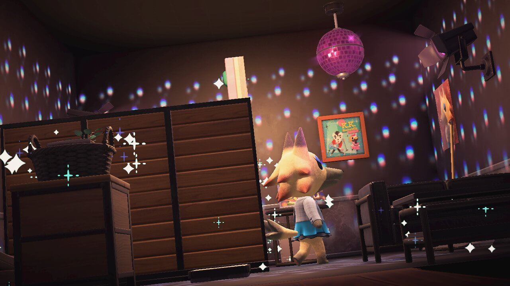

Skip to main content
All projects
Home
Codepens
Projects
Resumé
Blog
All my projects so far!
Decorating the villager Vivian's house in Animal Crossing New Horizons (acnh)
Filed under:
#video-games

Vivian's house, fully decorated to her liking by me.
More about Vivian...
Opens to nookipedia.com
Find me at some of these other places...
Linkedin
Opens to linkedin.com
Codepen
Opens to codepen.io
Github
Opens to github.com
Bluesky
Opens to bsky.app